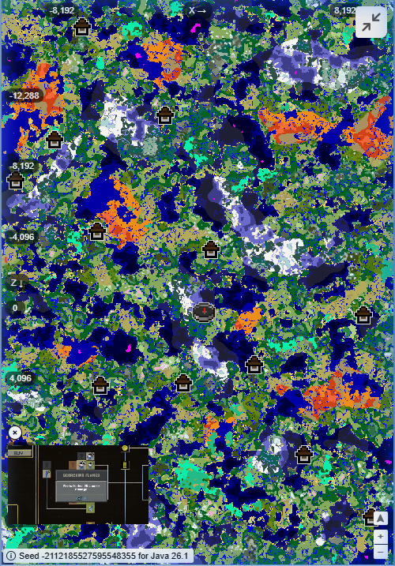

A grande capital militar do reino. Clique para localizar as muralhas imponentes e o centro de comando de Velmora.
Cidade portuária viva. Clique para navegar pelas tavernas e pelo porto mercante da região sul do continente.
Explore ruínas esquecidas, criaturas ancestrais e tesouros raros escondidos pelas terras de Velmora.